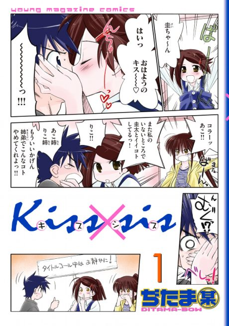

kiss×sis (TV)
kiss×sis (TV)
Keita's two stepsisters are both in love with him, and the competition gets heated as he studies for exams.
After the anime, read the manga from Chapter 25.
5.9AniList score
—Animeter, no votes yet
12episodes
Rate it or report where you stopped
Is it worth pushing through?
Built from what visitors report across all 12 episodes.
Loading reports…Checking what other people said about this one.
Sign in above with your email to add your report.
More like kiss×sis (TV)
Manga Vol. 45.7
Kanokon: The Girl Who Cried Fox Manga Ch. 867.6
Manga Ch. 867.6
 Manga Ch. 356.9
Manga Ch. 356.9
 Manga Ch. 706.5
Manga Ch. 706.5
 Manga Ch. 486.9
Manga Ch. 486.9
 Done7.6
Done7.6
 Manga Ch. 868.0
Manga Ch. 868.0
 Unclear6.7
Unclear6.7
 Manga Ch. 486.6
Manga Ch. 486.6
 Unclear6.3
Unclear6.3
 Manga Ch. 1077.3
Manga Ch. 1077.3
 Manga Ch. 827.3
Manga Ch. 827.3